B2B SAAS · WEB + MOBILE · NDA
Цифровая платформа для винодельни
Система автоматизации производственных процессов на винодельнях. Она заменяет бумажные журналы и Excel единой системой для агрономов, виноделов и лаборантов, применяет искусственный интеллект и имеет модульную структуру, охватывая весь цикл: от лозы до бутылки.
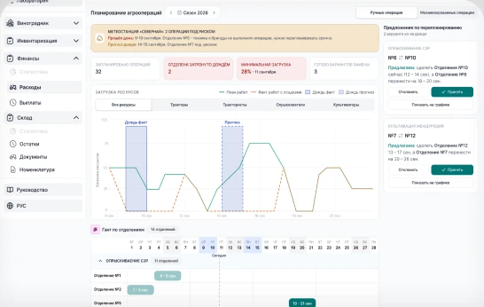
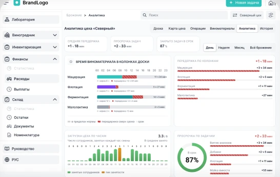
МОЯ РОЛЬ
Я вёл дизайн платформы от исследования до готовых интерфейсов. Вместе с PM, аналитиками и разработчиками превращал процессы винодельни в понятные экраны, а на проверках с технологами, лаборантами и агрономами уточнял решения. Параллельно менторил трёх дизайнеров, которые затем подключились к другим проектам компании, и участвовал в найме и онбординге. Макеты и интерактивные прототипы собираю с помощью ИИ: Figma MCP и HTML-прототипы, подробнее ниже.
КОРОТКО О КЕЙСЕ
Винодельня жила на бумажных журналах, таблицах и чатах: задачи терялись, анализы опаздывали, погоду сверяли вручную. Мы собрали единую платформу из 60 модулей: от агроплана и прогноза рисков до лаборатории и аналитики цеха. Она работает на компьютере в офисе и на телефоне в поле и внедрена на 3 винодельнях.
Для кого и какая боль
Типичное предприятие полного цикла (средние значения по винодельням, по данным интервью): 285 отделений виноградника, 6 цехов и 100+ ёмкостей.
Около 300 сотрудников (от 30 до 600+) в четырёх ролях работают в поле, цеху, лаборатории и офисе.
Знания жили в бумажных журналах, Excel и личных чатах: это стоило времени, денег и урожая.
и не сорвать сезонные операции.
в разных файлах и чатах.
каждую ёмкость и партию.
о проблемах узнаёт поздно.
точно и в срок.
очередь и сроки не видны.
и загрузку людей.
вручную в конце смены.
Что узнали и как шли к решению
Три недели погружения: интервью, наблюдение за сменами и аудит артефактов. Дальше работали итерациями по модулям: небольшими релизами, которые сразу проверялись на реальных сотрудниках.
На крупнейшем предприятии агрономы сверяли три источника погоды и опирались на опыт. Системе нужно не показывать данные, а подсказывать действие.
Рекомендации и кнопки действий прямо на экранах риска.
В цеху работают в перчатках, в поле - на солнце и без стабильной связи.
Крупные зоны нажатия, высокий контраст, состояния без сети.
Руководителю нужно за секунды понять, что просрочено и где узкое место.
Статусы, счётчики и цветовые сигналы вместо длинных таблиц.
60 модулей - один паттерн
Навигация построена по производственному циклу: от виноградника до розлива.
Общие паттерны - список и деталь, статусы, графики - переиспользуются во всех модулях.
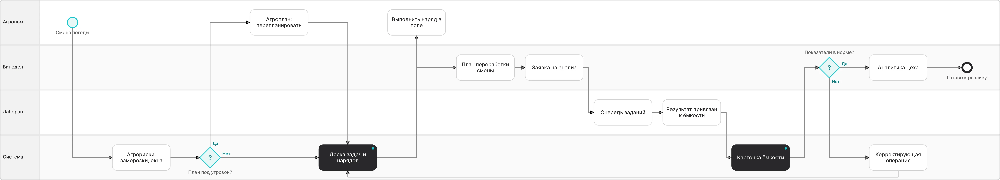
Семь модулей, которые изменили работу
Для каждого модуля: решение, эффект и схема сценариев с ролями, шагами и развилками.
Единая доска задач и нарядов
Основа всей системы: любое поручение в цеху и в поле живёт в одном месте - с владельцем, сроком и историей.
Канбан «Входящие → Выполняются → Можно проверять» с настраиваемыми колонками, карточкой с номером, сроком и исполнителем и быстрым созданием задачи прямо в колонке.
Шагов в создании задачи: 11–13 → 8–10 (оценка). Время постановки: ≈20 → ≈7 мин для полной задачи, краткая - около минуты. Доля задач в срок: 61% (опрос) → 87% (данные системы).
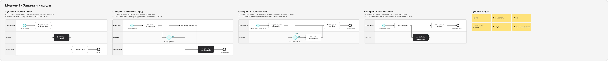
Лаборатория: очередь заданий на анализ
Лаборант и винодел работают в одном потоке: от заявки до результата, привязанного к ёмкости.
Inbox заданий со счётчиками «на сегодня / запланированные / просроченные», пошаговый статус от «Открыто» до «Завершено» и деталь с набором анализов и журналом изменений.
Просроченные анализы: 31% (журнал) → 18% (тестирование с лаборантами), −42%. Время до взятия в работу: ≈3 ч (интервью) → ≈25 мин (тест с лаборантами).
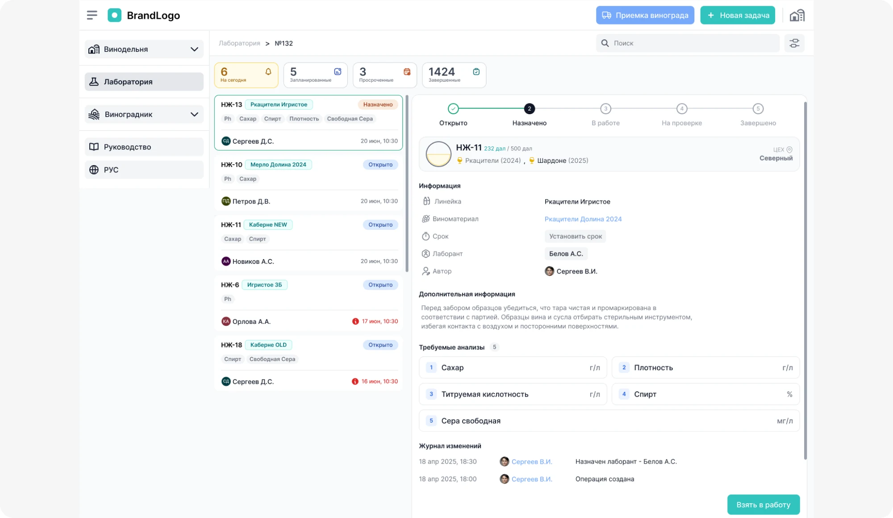
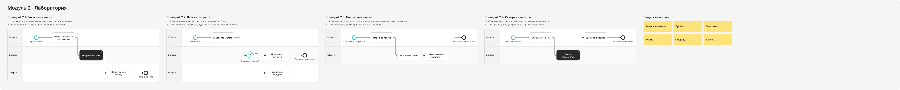
Ёмкость: вся картина на одном экране
Ёмкость - центральный объект производства. Карточка собирает состав, анализы, операции и температуру.
Карточка с вкладками, история приёмок с ключевыми анализами и график температуры с коридором, порогами и маркерами тревог рядом со статусами датчика и клапана.
Реакция на рост температуры: ~30 мин по обходам → сразу, алерт в приложении, Telegram и веб. Поиск ёмкости: ≈6 мин в Excel → ≈20 сек (оценка).
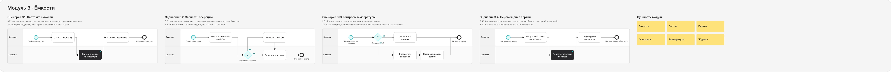
Переработка и аналитика цеха
План смены и аналитика образуют петлю: сегодня распределяем виноград, завтра видим, где потеряли время.
Планирование: KPI-панель, таймлайн загрузки прессов и цепочка «виноград → фракции → ёмкости». Аналитика: передержка в колонках против нормы, просрочка задач и загрузка людей по часам.
План смены: ≈45 мин (интервью) → ≈11 мин (тест, замер QA и аналитика), −75%.
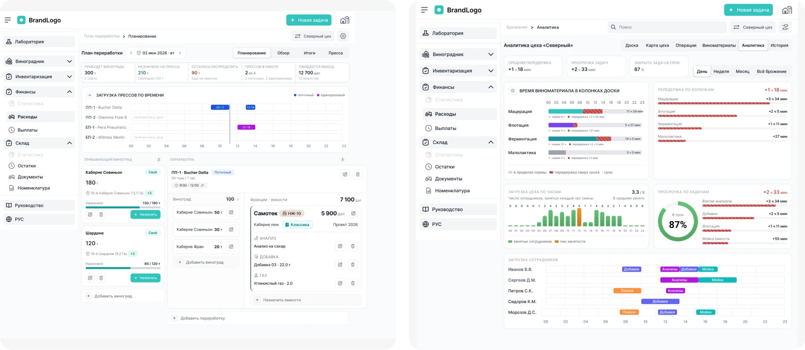
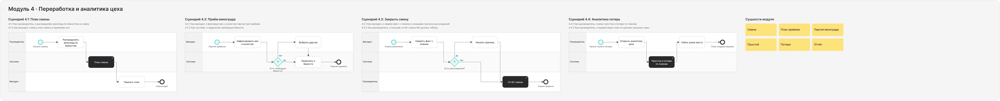
Агроплан: перепланирование за пару кликов
Дождь, техника и бригады постоянно сдвигают планы. Система показывает последствия и предлагает варианты.
Плашка метеорисков, график загрузки «план против факта» с наложением осадков, Гант по отделениям и блок «Предложения по перепланированию»: система предлагает, человек принимает или отклоняет.
Перепланирование после дождя: ≈3 ч (оценка агрономов) → ≈15 мин (тест QA): время от анализа оценки до принятия мер.
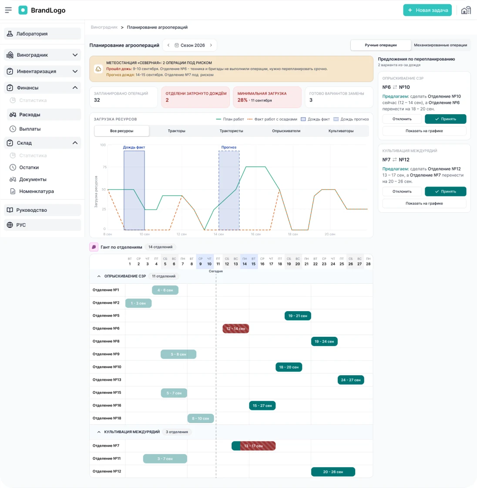
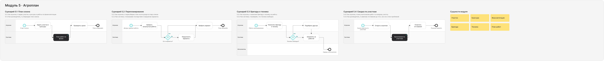
Агрориски: заморозки, окна обработки, болезни
Погода превращается в конкретные действия: где, когда и что делать, с привязкой к участкам, технике и фазе вегетации.
Прогноз заморозков по участкам, часовая шкала окна опрыскивания с условиями препарата, страница вспышки с динамикой и настройка порогов по фазам вегетации без участия разработчиков.
A/B-тест экрана заморозков на 12 агрономах: задача создаётся в 83% случаев против 67% (15 из 18 и 12 из 18), CTR кнопки +16%.
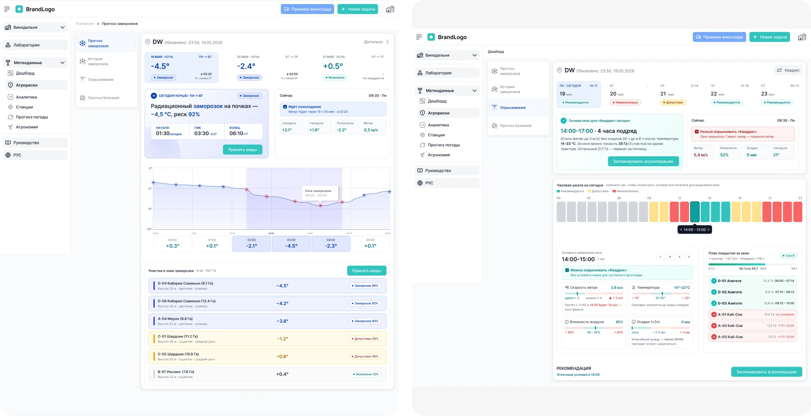
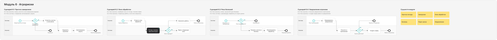
Мобильное приложение для поля и цеха
Те же сценарии, но под одну руку, перчатки и нестабильную связь.
Нативные паттерны iOS и Android: задачи с вкладками «Автор / Исполнитель», создание в несколько касаний с вложениями, список ёмкостей с группой «требуют внимания» и карточка тревоги с действием «Создать задачу на охлаждение».
70% задач создаётся с телефона (среднее по предприятиям за месяц эксплуатации). От тревоги до задачи: ≈5 мин (интервью: чат, звонок, поиск человека) → ≈40 сек (тест).
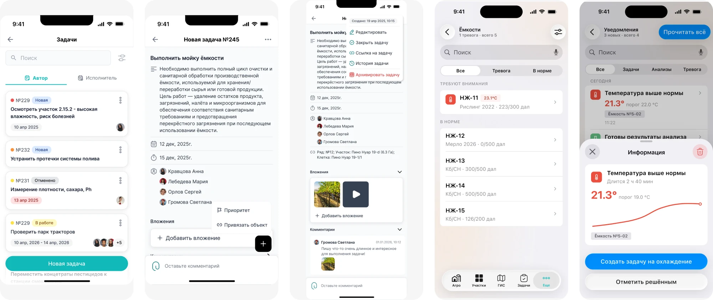
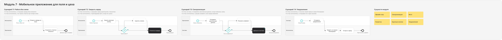
Универсальная база для всех проектов
Дизайн-систему мы развивали с командой: часть компонентов делали сами, часть адаптировали из готовых библиотек. Для каждого проекта берётся копия под бренд и запросы заказчика. На этом проекте система сократила время на дизайн новых экранов на 25-30%.
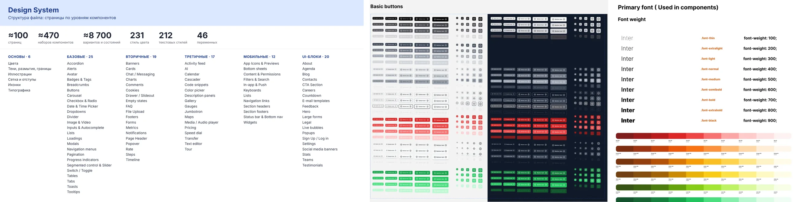
Макеты и прототипы с помощью ИИ
Подключил Figma к рабочему аккаунту Claude через MCP: по задачам PM из Jira и Pyrus быстро собираю макеты прямо в Figma. Для наглядности перевожу макеты в HTML-прототипы, тестирую и передаю в разработку. Этот процесс использую в работе только я.
Самый крупный пример: обновлённый дизайн платформы для винодельни. Я взял четыре концептуальных экрана из Figma, загрузил их в Claude и попросил выделить дизайн-систему. Через встроенный браузер открыл действующее приложение на тестовой винодельне, попросил сделать аудит и по новой дизайн-системе собрать редизайн.
За три дня получился полностью рабочий HTML-прототип на демо-данных: по нему можно сразу кликать. Прототип сырой, на доработку нужно ещё 3-4 дня. Команде идея понравилась, ребрендинг продолжается.
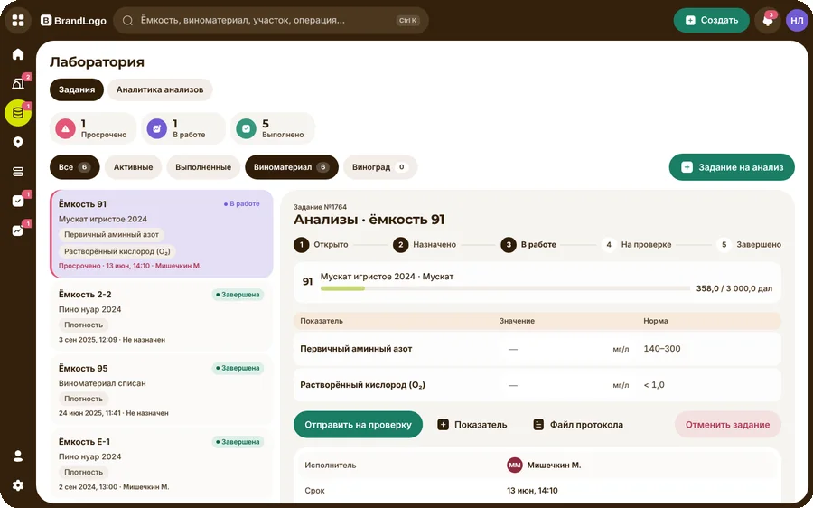
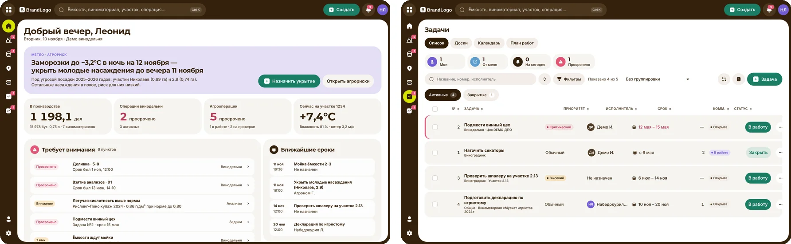
Что изменилось в работе предприятия
Метрики по основному предприятию: журналы и интервью до внедрения, тестирование и логи системы после.
Что я вынес из проекта
Модель «система предлагает - человек решает» прижилась: агрономы принимают большинство предложенных вариантов перепланирования. Универсальная дизайн-система компании, которую мы развивали втроём, сократила время на дизайн новых экранов на 25-30% (оценка). Дизайн-ревью реализованных интерфейсов помогло ловить расхождения с макетами до релиза.
Совмещать разный уровень цифровой грамотности и условия работы: перчатки, солнце, слабая связь. Приходилось упрощать интерфейс без потери данных.
Раньше добавил бы сквозную продуктовую аналитику по всем модулям и проводил тесты прямо на виноградниках, а не только в офисе.
Офлайн-режим для поля, push-тревоги по ёмкостям и рекомендации на основе истории сезонов.
Другие проекты
Можете ознакомиться с моими другими проектами